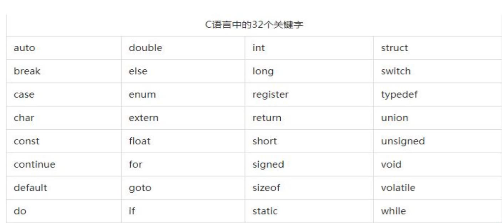
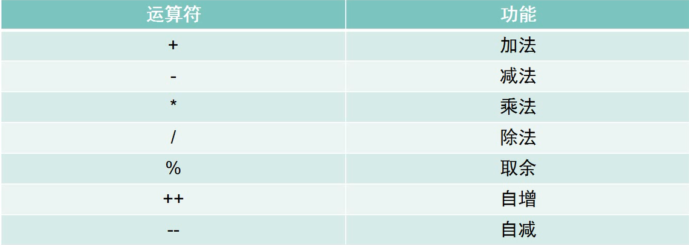
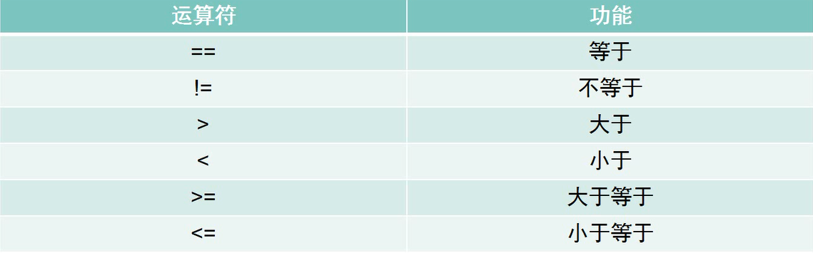
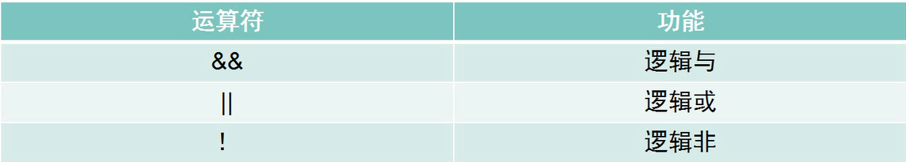
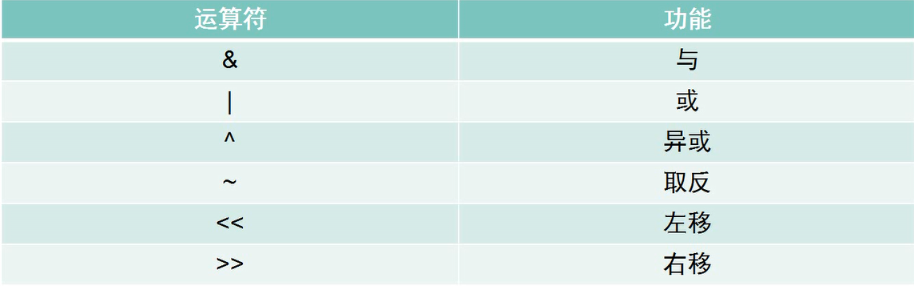
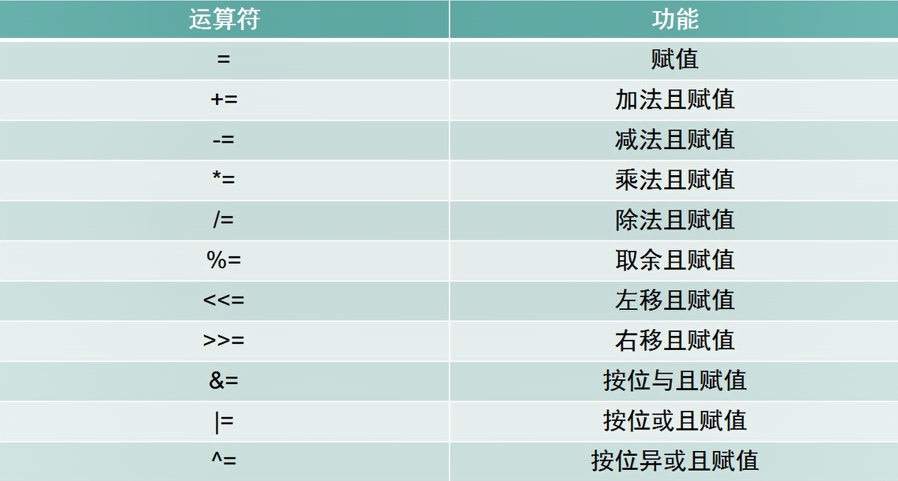
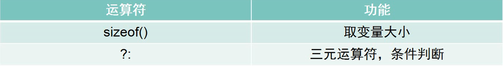

<!DOCTYPE html>
<html lang="en">
<head>
    <meta charset="utf-8">
    
    <title>C语言基础01--初见C语言 | kn0sky&#39;wiki</title>
    
    
        <meta name="keywords" content="kn0sky">
    
    <meta name="viewport" content="width=device-width, initial-scale=1, maximum-scale=1">
    <meta name="description" content="C语言基础01–初见C语言常见函数默认情况下，main函数是C语言的起点 printf()函数是格式化输出函数  （来自stdio.h） 单行注释：&#x2F;    单行内容   &#x2F; 多行注释：&#x2F;*  多行内容 *&#x2F; 使用VS2015创建项目 新建项目 依次选择vc++ ，win32   ，win32控制台程序 随便写个项目名称 应用程序向导里选择空项目，其他默认 从源文件添加新建项，创建.c文件 开始写">
<meta property="og:type" content="article">
<meta property="og:title" content="C语言基础01--初见C语言">
<meta property="og:url" content="http://kn0sky.com/wiki/%E5%AD%A6%E4%B9%A0%E7%AC%94%E8%AE%B0/C%E8%AF%AD%E8%A8%80%E5%AD%A6%E4%B9%A0%E7%AC%94%E8%AE%B0/C%E8%AF%AD%E8%A8%80%E5%9F%BA%E7%A1%8001--%E5%88%9D%E8%A7%81C%E8%AF%AD%E8%A8%80/index.html">
<meta property="og:site_name" content="kn0sky&#39;wiki">
<meta property="og:description" content="C语言基础01–初见C语言常见函数默认情况下，main函数是C语言的起点 printf()函数是格式化输出函数  （来自stdio.h） 单行注释：&#x2F;    单行内容   &#x2F; 多行注释：&#x2F;*  多行内容 *&#x2F; 使用VS2015创建项目 新建项目 依次选择vc++ ，win32   ，win32控制台程序 随便写个项目名称 应用程序向导里选择空项目，其他默认 从源文件添加新建项，创建.c文件 开始写">
<meta property="og:locale" content="en_US">
<meta property="og:image" content="http://kn0sky.com/wiki/%E5%AD%A6%E4%B9%A0%E7%AC%94%E8%AE%B0/C%E8%AF%AD%E8%A8%80%E5%AD%A6%E4%B9%A0%E7%AC%94%E8%AE%B0/C%E8%AF%AD%E8%A8%80%E5%9F%BA%E7%A1%8001--%E5%88%9D%E8%A7%81C%E8%AF%AD%E8%A8%80/image-20200515130659045.png">
<meta property="og:image" content="http://kn0sky.com/wiki/%E5%AD%A6%E4%B9%A0%E7%AC%94%E8%AE%B0/C%E8%AF%AD%E8%A8%80%E5%AD%A6%E4%B9%A0%E7%AC%94%E8%AE%B0/C%E8%AF%AD%E8%A8%80%E5%9F%BA%E7%A1%8001--%E5%88%9D%E8%A7%81C%E8%AF%AD%E8%A8%80/image-20200515140054237.png">
<meta property="og:image" content="http://kn0sky.com/wiki/%E5%AD%A6%E4%B9%A0%E7%AC%94%E8%AE%B0/C%E8%AF%AD%E8%A8%80%E5%AD%A6%E4%B9%A0%E7%AC%94%E8%AE%B0/C%E8%AF%AD%E8%A8%80%E5%9F%BA%E7%A1%8001--%E5%88%9D%E8%A7%81C%E8%AF%AD%E8%A8%80/image-20200515140505452.png">
<meta property="og:image" content="http://kn0sky.com/wiki/%E5%AD%A6%E4%B9%A0%E7%AC%94%E8%AE%B0/C%E8%AF%AD%E8%A8%80%E5%AD%A6%E4%B9%A0%E7%AC%94%E8%AE%B0/C%E8%AF%AD%E8%A8%80%E5%9F%BA%E7%A1%8001--%E5%88%9D%E8%A7%81C%E8%AF%AD%E8%A8%80/image-20200515140907257.png">
<meta property="og:image" content="http://kn0sky.com/wiki/%E5%AD%A6%E4%B9%A0%E7%AC%94%E8%AE%B0/C%E8%AF%AD%E8%A8%80%E5%AD%A6%E4%B9%A0%E7%AC%94%E8%AE%B0/C%E8%AF%AD%E8%A8%80%E5%9F%BA%E7%A1%8001--%E5%88%9D%E8%A7%81C%E8%AF%AD%E8%A8%80/image-20200515141019708.png">
<meta property="og:image" content="http://kn0sky.com/wiki/%E5%AD%A6%E4%B9%A0%E7%AC%94%E8%AE%B0/C%E8%AF%AD%E8%A8%80%E5%AD%A6%E4%B9%A0%E7%AC%94%E8%AE%B0/C%E8%AF%AD%E8%A8%80%E5%9F%BA%E7%A1%8001--%E5%88%9D%E8%A7%81C%E8%AF%AD%E8%A8%80/image-20200515141156271.png">
<meta property="og:image" content="http://kn0sky.com/wiki/%E5%AD%A6%E4%B9%A0%E7%AC%94%E8%AE%B0/C%E8%AF%AD%E8%A8%80%E5%AD%A6%E4%B9%A0%E7%AC%94%E8%AE%B0/C%E8%AF%AD%E8%A8%80%E5%9F%BA%E7%A1%8001--%E5%88%9D%E8%A7%81C%E8%AF%AD%E8%A8%80/image-20200515141442250.png">
<meta property="article:published_time" content="2020-05-15T06:40:50.000Z">
<meta property="article:modified_time" content="2020-05-16T16:52:03.000Z">
<meta property="article:author" content="kn0sky">
<meta property="article:tag" content="kn0sky">
<meta name="twitter:card" content="summary">
<meta name="twitter:image" content="http://kn0sky.com/wiki/%E5%AD%A6%E4%B9%A0%E7%AC%94%E8%AE%B0/C%E8%AF%AD%E8%A8%80%E5%AD%A6%E4%B9%A0%E7%AC%94%E8%AE%B0/C%E8%AF%AD%E8%A8%80%E5%9F%BA%E7%A1%8001--%E5%88%9D%E8%A7%81C%E8%AF%AD%E8%A8%80/image-20200515130659045.png">
    

    
        <link rel="alternate" href="/atom.xml" title="kn0sky&#39;wiki" type="application/atom+xml">
    

    
        <link rel="icon" href="/favicon.ico">
    

    
<link rel="stylesheet" href="/libs/font-awesome/css/font-awesome.min.css">

    
<link rel="stylesheet" href="/libs/open-sans/styles.css">

    
<link rel="stylesheet" href="/libs/source-code-pro/styles.css">


    
<link rel="stylesheet" href="/css/style.css">

    
<script src="/libs/jquery/2.1.3/jquery.min.js"></script>

    
<script src="/libs/jquery/plugins/cookie/1.4.1/jquery.cookie.js"></script>

    
    
        
<link rel="stylesheet" href="/libs/lightgallery/css/lightgallery.min.css">

    
    
        
<link rel="stylesheet" href="/libs/justified-gallery/justifiedGallery.min.css">

    
    
    
    


    
        <script async src="//busuanzi.ibruce.info/busuanzi/2.3/busuanzi.pure.mini.js"></script>
    
<meta name="generator" content="Hexo 4.2.0"></head>
</html>
<body>
    <div id="container">
        <header id="header">
    <div id="header-main" class="header-inner">
        <div class="outer">
            <a href="/" id="logo">
                <i class="logo"></i>
                <span class="site-title">kn0sky&#39;wiki</span>
            </a>
            <nav id="main-nav">
                
                    <a class="main-nav-link" href="/">首页</a>
                
                    <a class="main-nav-link" href="/archives">归档</a>
                
                    <a class="main-nav-link" href="/categories">分类</a>
                
                    <a class="main-nav-link" href="/tags">标签</a>
                
                    <a class="main-nav-link" href="/about">关于</a>
                
            </nav>
            
            <div id="search-form-wrap">

    <form class="search-form">
        <input type="text" class="ins-search-input search-form-input" placeholder="Search">
        <button type="submit" class="search-form-submit"></button>
    </form>
    <div class="ins-search">
    <div class="ins-search-mask"></div>
    <div class="ins-search-container">
        <div class="ins-input-wrapper">
            <input type="text" class="ins-search-input" placeholder="Type something...">
            <span class="ins-close ins-selectable"><i class="fa fa-times-circle"></i></span>
        </div>
        <div class="ins-section-wrapper">
            <div class="ins-section-container"></div>
        </div>
    </div>
</div>
<script>
(function (window) {
    var INSIGHT_CONFIG = {
        TRANSLATION: {
            POSTS: 'Posts',
            PAGES: 'Pages',
            CATEGORIES: 'Categories',
            TAGS: 'Tags',
            UNTITLED: '(Untitled)',
        },
        ROOT_URL: '/',
        CONTENT_URL: '/content.json',
    };
    window.INSIGHT_CONFIG = INSIGHT_CONFIG;
})(window);
</script>

<script src="/js/insight.js"></script>


</div>
        </div>
    </div>
    <div id="main-nav-mobile" class="header-sub header-inner">
        <table class="menu outer">
            <tr>
                
                    <td><a class="main-nav-link" href="/">首页</a></td>
                
                    <td><a class="main-nav-link" href="/archives">归档</a></td>
                
                    <td><a class="main-nav-link" href="/categories">分类</a></td>
                
                    <td><a class="main-nav-link" href="/tags">标签</a></td>
                
                    <td><a class="main-nav-link" href="/about">关于</a></td>
                
                <td>
                    
    <div class="search-form">
        <input type="text" class="ins-search-input search-form-input" placeholder="Search">
    </div>

                </td>
            </tr>
        </table>
    </div>
</header>

        <div class="outer">
            
            
                <aside id="sidebar">
   
        
    <div class="widget-wrap" id="categories">
        <h3 class="widget-title">
            <span>categories</span>
            &nbsp;
            <a id="allExpand" href="#">
                <i class="fa fa-angle-double-down fa-2x"></i>
            </a>
        </h3>
        
        
        
         <ul class="unstyled" id="tree"> 
                    <li class="directory">
                        <a href="#" data-role="directory">
                            <i class="fa fa-folder"></i>
                            &nbsp;
                            XCTF攻防世界WP
                        </a>
                         <ul class="unstyled" id="tree"> 
                    <li class="directory">
                        <a href="#" data-role="directory">
                            <i class="fa fa-folder"></i>
                            &nbsp;
                            新手练习区
                        </a>
                         <ul class="unstyled" id="tree"> 
                    <li class="directory">
                        <a href="#" data-role="directory">
                            <i class="fa fa-folder"></i>
                            &nbsp;
                            REVERSE
                        </a>
                         <ul class="unstyled" id="tree">  <li class="file"><a href="/wiki/XCTF%E6%94%BB%E9%98%B2%E4%B8%96%E7%95%8CWP/%E6%96%B0%E6%89%8B%E7%BB%83%E4%B9%A0%E5%8C%BA/REVERSE/re001-open-source/">open-source Write Up</a></li>  </ul> 
                    </li> 
                     </ul> 
                    </li> 
                     </ul> 
                    </li> 
                    
                    <li class="directory">
                        <a href="#" data-role="directory">
                            <i class="fa fa-folder"></i>
                            &nbsp;
                            备忘笔记
                        </a>
                         <ul class="unstyled" id="tree">  <li class="file"><a href="/wiki/%E5%A4%87%E5%BF%98%E7%AC%94%E8%AE%B0/%E5%B8%B8%E7%94%A8%E5%B7%A5%E5%85%B7%E6%B1%87%E6%80%BB/">常用工具备忘录</a></li>  </ul> 
                    </li> 
                    
                    <li class="directory open">
                        <a href="#" data-role="directory">
                            <i class="fa fa-folder-open"></i>
                            &nbsp;
                            学习笔记
                        </a>
                         <ul class="unstyled" id="tree"> 
                    <li class="directory">
                        <a href="#" data-role="directory">
                            <i class="fa fa-folder"></i>
                            &nbsp;
                            51单片机学习笔记
                        </a>
                         <ul class="unstyled" id="tree">  <li class="file"><a href="/wiki/%E5%AD%A6%E4%B9%A0%E7%AC%94%E8%AE%B0/51%E5%8D%95%E7%89%87%E6%9C%BA%E5%AD%A6%E4%B9%A0%E7%AC%94%E8%AE%B0/51%E5%8D%95%E7%89%87%E6%9C%BA%E5%85%A5%E9%97%A801--LED%E6%B5%81%E6%B0%B4%E7%81%AF/">51单片机入门01--LED流水灯</a></li>  <li class="file"><a href="/wiki/%E5%AD%A6%E4%B9%A0%E7%AC%94%E8%AE%B0/51%E5%8D%95%E7%89%87%E6%9C%BA%E5%AD%A6%E4%B9%A0%E7%AC%94%E8%AE%B0/51%E5%8D%95%E7%89%87%E6%9C%BA%E5%85%A5%E9%97%A802--%E6%95%B0%E7%A0%81%E7%AE%A1/">51单片机入门02--数码管</a></li>  <li class="file"><a href="/wiki/%E5%AD%A6%E4%B9%A0%E7%AC%94%E8%AE%B0/51%E5%8D%95%E7%89%87%E6%9C%BA%E5%AD%A6%E4%B9%A0%E7%AC%94%E8%AE%B0/51%E5%8D%95%E7%89%87%E6%9C%BA%E5%85%A5%E9%97%A803--%E6%8C%89%E9%94%AE/">51单片机入门03--按键</a></li>  <li class="file"><a href="/wiki/%E5%AD%A6%E4%B9%A0%E7%AC%94%E8%AE%B0/51%E5%8D%95%E7%89%87%E6%9C%BA%E5%AD%A6%E4%B9%A0%E7%AC%94%E8%AE%B0/51%E5%8D%95%E7%89%87%E6%9C%BA%E5%85%A5%E9%97%A804--%E5%AE%9A%E6%97%B6&%E8%AE%A1%E6%95%B0%E5%99%A8/">51单片机入门04--定时&计数器</a></li>  </ul> 
                    </li> 
                    
                    <li class="directory open">
                        <a href="#" data-role="directory">
                            <i class="fa fa-folder-open"></i>
                            &nbsp;
                            C语言学习笔记
                        </a>
                         <ul class="unstyled" id="tree">  <li class="file active"><a href="/wiki/%E5%AD%A6%E4%B9%A0%E7%AC%94%E8%AE%B0/C%E8%AF%AD%E8%A8%80%E5%AD%A6%E4%B9%A0%E7%AC%94%E8%AE%B0/C%E8%AF%AD%E8%A8%80%E5%9F%BA%E7%A1%8001--%E5%88%9D%E8%A7%81C%E8%AF%AD%E8%A8%80/">C语言基础01--初见C语言</a></li>  <li class="file"><a href="/wiki/%E5%AD%A6%E4%B9%A0%E7%AC%94%E8%AE%B0/C%E8%AF%AD%E8%A8%80%E5%AD%A6%E4%B9%A0%E7%AC%94%E8%AE%B0/C%E8%AF%AD%E8%A8%80%E5%9F%BA%E7%A1%8002--%E6%9D%A1%E4%BB%B6%E8%AF%AD%E5%8F%A5/">C语言基础02--条件语句</a></li>  <li class="file"><a href="/wiki/%E5%AD%A6%E4%B9%A0%E7%AC%94%E8%AE%B0/C%E8%AF%AD%E8%A8%80%E5%AD%A6%E4%B9%A0%E7%AC%94%E8%AE%B0/C%E8%AF%AD%E8%A8%80%E5%9F%BA%E7%A1%8003--%E5%AE%8F&%E5%87%BD%E6%95%B0&%E6%95%B0%E7%BB%84/">C语言基础03--宏&函数&数组</a></li>  <li class="file"><a href="/wiki/%E5%AD%A6%E4%B9%A0%E7%AC%94%E8%AE%B0/C%E8%AF%AD%E8%A8%80%E5%AD%A6%E4%B9%A0%E7%AC%94%E8%AE%B0/C%E8%AF%AD%E8%A8%80%E5%9F%BA%E7%A1%8004--%E6%8C%87%E9%92%88/">C语言基础04--指针</a></li>  <li class="file"><a href="/wiki/%E5%AD%A6%E4%B9%A0%E7%AC%94%E8%AE%B0/C%E8%AF%AD%E8%A8%80%E5%AD%A6%E4%B9%A0%E7%AC%94%E8%AE%B0/C%E8%AF%AD%E8%A8%80%E5%9F%BA%E7%A1%8005--%E5%AD%97%E7%AC%A6%E4%B8%B2%E6%93%8D%E4%BD%9C/">C语言基础05--字符串操作</a></li>  <li class="file"><a href="/wiki/%E5%AD%A6%E4%B9%A0%E7%AC%94%E8%AE%B0/C%E8%AF%AD%E8%A8%80%E5%AD%A6%E4%B9%A0%E7%AC%94%E8%AE%B0/C%E8%AF%AD%E8%A8%80%E5%9F%BA%E7%A1%8006--%E5%AD%98%E5%82%A8%E7%B1%BB&%E5%86%85%E5%AD%98%E7%AE%A1%E7%90%86/">C语言基础06--存储类&内存管理</a></li>  <li class="file"><a href="/wiki/%E5%AD%A6%E4%B9%A0%E7%AC%94%E8%AE%B0/C%E8%AF%AD%E8%A8%80%E5%AD%A6%E4%B9%A0%E7%AC%94%E8%AE%B0/C%E8%AF%AD%E8%A8%80%E5%9F%BA%E7%A1%8007--%E6%96%87%E4%BB%B6%E6%93%8D%E4%BD%9C/">C语言基础07--文件操作</a></li>  <li class="file"><a href="/wiki/%E5%AD%A6%E4%B9%A0%E7%AC%94%E8%AE%B0/C%E8%AF%AD%E8%A8%80%E5%AD%A6%E4%B9%A0%E7%AC%94%E8%AE%B0/C%E8%AF%AD%E8%A8%80%E5%9F%BA%E7%A1%8008--%E7%BB%93%E6%9E%84%E4%BD%93/">C语言基础08--结构体</a></li>  <li class="file"><a href="/wiki/%E5%AD%A6%E4%B9%A0%E7%AC%94%E8%AE%B0/C%E8%AF%AD%E8%A8%80%E5%AD%A6%E4%B9%A0%E7%AC%94%E8%AE%B0/C%E8%AF%AD%E8%A8%80%E5%9F%BA%E7%A1%8009--C%E9%A2%84%E5%A4%84%E7%90%86%E5%99%A8%E5%92%8CC%E5%BA%93/">C语言基础09--C预处理器和C库</a></li>  </ul> 
                    </li> 
                    
                    <li class="directory">
                        <a href="#" data-role="directory">
                            <i class="fa fa-folder"></i>
                            &nbsp;
                            前端入门学习笔记
                        </a>
                         <ul class="unstyled" id="tree">  <li class="file"><a href="/wiki/%E5%AD%A6%E4%B9%A0%E7%AC%94%E8%AE%B0/%E5%89%8D%E7%AB%AF%E5%85%A5%E9%97%A8%E5%AD%A6%E4%B9%A0%E7%AC%94%E8%AE%B0/%E5%89%8D%E7%AB%AF%E5%85%A5%E9%97%A801--HTML&CSS%E5%9F%BA%E7%A1%80/">前端入门01--HTML和CSS基础</a></li>  </ul> 
                    </li> 
                    
                    <li class="directory">
                        <a href="#" data-role="directory">
                            <i class="fa fa-folder"></i>
                            &nbsp;
                            半导体物理学习笔记
                        </a>
                         <ul class="unstyled" id="tree">  <li class="file"><a href="/wiki/%E5%AD%A6%E4%B9%A0%E7%AC%94%E8%AE%B0/%E5%8D%8A%E5%AF%BC%E4%BD%93%E7%89%A9%E7%90%86%E5%AD%A6%E4%B9%A0%E7%AC%94%E8%AE%B0/%E5%8D%8A%E5%AF%BC%E4%BD%93%E7%89%A9%E7%90%8601--%E8%83%BD%E5%B8%A6%E7%90%86%E8%AE%BA/">半导体物理01--能带理论</a></li>  </ul> 
                    </li> 
                    
                    <li class="directory">
                        <a href="#" data-role="directory">
                            <i class="fa fa-folder"></i>
                            &nbsp;
                            汇编基础学习笔记
                        </a>
                         <ul class="unstyled" id="tree">  <li class="file"><a href="/wiki/%E5%AD%A6%E4%B9%A0%E7%AC%94%E8%AE%B0/%E6%B1%87%E7%BC%96%E5%9F%BA%E7%A1%80%E5%AD%A6%E4%B9%A0%E7%AC%94%E8%AE%B0/%E6%B1%87%E7%BC%96%E5%9F%BA%E7%A1%8001--%E5%9F%BA%E7%A1%80%E6%A6%82%E5%BF%B5/">汇编基础01：基础概念</a></li>  <li class="file"><a href="/wiki/%E5%AD%A6%E4%B9%A0%E7%AC%94%E8%AE%B0/%E6%B1%87%E7%BC%96%E5%9F%BA%E7%A1%80%E5%AD%A6%E4%B9%A0%E7%AC%94%E8%AE%B0/%E6%B1%87%E7%BC%96%E5%9F%BA%E7%A1%8002--%E7%AC%AC%E4%B8%80%E4%B8%AA%E7%A8%8B%E5%BA%8F/">汇编基础02：第一个程序</a></li>  <li class="file"><a href="/wiki/%E5%AD%A6%E4%B9%A0%E7%AC%94%E8%AE%B0/%E6%B1%87%E7%BC%96%E5%9F%BA%E7%A1%80%E5%AD%A6%E4%B9%A0%E7%AC%94%E8%AE%B0/%E6%B1%87%E7%BC%96%E5%9F%BA%E7%A1%8003--%E6%95%B0%E5%AD%A6%E8%BF%90%E7%AE%97&%E9%80%BB%E8%BE%91%E8%BF%90%E7%AE%97/">汇编基础03：数学运算&逻辑运算</a></li>  <li class="file"><a href="/wiki/%E5%AD%A6%E4%B9%A0%E7%AC%94%E8%AE%B0/%E6%B1%87%E7%BC%96%E5%9F%BA%E7%A1%80%E5%AD%A6%E4%B9%A0%E7%AC%94%E8%AE%B0/%E6%B1%87%E7%BC%96%E5%9F%BA%E7%A1%8004--%E5%BE%AA%E7%8E%AF/">汇编基础04：循环</a></li>  <li class="file"><a href="/wiki/%E5%AD%A6%E4%B9%A0%E7%AC%94%E8%AE%B0/%E6%B1%87%E7%BC%96%E5%9F%BA%E7%A1%80%E5%AD%A6%E4%B9%A0%E7%AC%94%E8%AE%B0/%E6%B1%87%E7%BC%96%E5%9F%BA%E7%A1%8005--%E5%A0%86%E6%A0%88/">汇编基础05：堆栈</a></li>  <li class="file"><a href="/wiki/%E5%AD%A6%E4%B9%A0%E7%AC%94%E8%AE%B0/%E6%B1%87%E7%BC%96%E5%9F%BA%E7%A1%80%E5%AD%A6%E4%B9%A0%E7%AC%94%E8%AE%B0/%E6%B1%87%E7%BC%96%E5%9F%BA%E7%A1%8006--%E6%95%B0%E6%8D%AE%E4%BC%A0%E9%80%81%E6%8C%87%E4%BB%A4/">汇编基础06：数据传送指令</a></li>  <li class="file"><a href="/wiki/%E5%AD%A6%E4%B9%A0%E7%AC%94%E8%AE%B0/%E6%B1%87%E7%BC%96%E5%9F%BA%E7%A1%80%E5%AD%A6%E4%B9%A0%E7%AC%94%E8%AE%B0/%E6%B1%87%E7%BC%96%E5%9F%BA%E7%A1%8007--%E6%AF%94%E8%BE%83%E6%8C%87%E4%BB%A4/">汇编基础07：比较指令</a></li>  <li class="file"><a href="/wiki/%E5%AD%A6%E4%B9%A0%E7%AC%94%E8%AE%B0/%E6%B1%87%E7%BC%96%E5%9F%BA%E7%A1%80%E5%AD%A6%E4%B9%A0%E7%AC%94%E8%AE%B0/%E6%B1%87%E7%BC%96%E5%9F%BA%E7%A1%8008--JCC%E6%8C%87%E4%BB%A4/">汇编基础08： JCC 转移指令</a></li>  <li class="file"><a href="/wiki/%E5%AD%A6%E4%B9%A0%E7%AC%94%E8%AE%B0/%E6%B1%87%E7%BC%96%E5%9F%BA%E7%A1%80%E5%AD%A6%E4%B9%A0%E7%AC%94%E8%AE%B0/%E6%B1%87%E7%BC%96%E5%9F%BA%E7%A1%8009--%E4%BC%A0%E9%80%81%E6%8C%87%E4%BB%A4/">汇编基础09--传送指令</a></li>  <li class="file"><a href="/wiki/%E5%AD%A6%E4%B9%A0%E7%AC%94%E8%AE%B0/%E6%B1%87%E7%BC%96%E5%9F%BA%E7%A1%80%E5%AD%A6%E4%B9%A0%E7%AC%94%E8%AE%B0/%E6%B1%87%E7%BC%96%E5%9F%BA%E7%A1%8011--win32%E6%B1%87%E7%BC%96/">汇编基础11--win32汇编</a></li>  <li class="file"><a href="/wiki/%E5%AD%A6%E4%B9%A0%E7%AC%94%E8%AE%B0/%E6%B1%87%E7%BC%96%E5%9F%BA%E7%A1%80%E5%AD%A6%E4%B9%A0%E7%AC%94%E8%AE%B0/%E6%B1%87%E7%BC%96%E5%9F%BA%E7%A1%8010--%E4%BD%BF%E7%94%A8%E5%87%BD%E6%95%B0/">汇编基础10--使用函数</a></li>  <li class="file"><a href="/wiki/%E5%AD%A6%E4%B9%A0%E7%AC%94%E8%AE%B0/%E6%B1%87%E7%BC%96%E5%9F%BA%E7%A1%80%E5%AD%A6%E4%B9%A0%E7%AC%94%E8%AE%B0/%E6%B1%87%E7%BC%96%E5%9F%BA%E7%A1%8012--%E6%95%B0%E7%BB%84%E5%92%8C%E7%BB%93%E6%9E%84%E4%BD%93/">汇编基础12--数组和结构体</a></li>  <li class="file"><a href="/wiki/%E5%AD%A6%E4%B9%A0%E7%AC%94%E8%AE%B0/%E6%B1%87%E7%BC%96%E5%9F%BA%E7%A1%80%E5%AD%A6%E4%B9%A0%E7%AC%94%E8%AE%B0/%E6%B1%87%E7%BC%96%E4%BD%9C%E4%B8%9A--%E7%94%B5%E8%AF%9D%E7%B0%BF/">汇编作业--电话簿</a></li>  <li class="file"><a href="/wiki/%E5%AD%A6%E4%B9%A0%E7%AC%94%E8%AE%B0/%E6%B1%87%E7%BC%96%E5%9F%BA%E7%A1%80%E5%AD%A6%E4%B9%A0%E7%AC%94%E8%AE%B0/%E6%B1%87%E7%BC%96%E5%9F%BA%E7%A1%8013--%E9%97%B4%E6%8E%A5%E5%AF%BB%E5%9D%80/">汇编基础13--间接寻址</a></li>  </ul> 
                    </li> 
                    
                    <li class="directory">
                        <a href="#" data-role="directory">
                            <i class="fa fa-folder"></i>
                            &nbsp;
                            王道计组书学习笔记
                        </a>
                         <ul class="unstyled" id="tree">  <li class="file"><a href="/wiki/%E5%AD%A6%E4%B9%A0%E7%AC%94%E8%AE%B0/%E7%8E%8B%E9%81%93%E8%AE%A1%E7%BB%84%E4%B9%A6%E5%AD%A6%E4%B9%A0%E7%AC%94%E8%AE%B0/%E7%8E%8B%E9%81%93%E8%AE%A1%E7%BB%84%E7%AC%94%E8%AE%B001--%E8%AE%A1%E7%AE%97%E6%9C%BA%E7%B3%BB%E7%BB%9F%E6%A6%82%E8%BF%B0/">王道计组笔记01--计算机系统概述</a></li>  </ul> 
                    </li> 
                    
                    <li class="directory">
                        <a href="#" data-role="directory">
                            <i class="fa fa-folder"></i>
                            &nbsp;
                            逆向入门学习笔记
                        </a>
                         <ul class="unstyled" id="tree">  <li class="file"><a href="/wiki/%E5%AD%A6%E4%B9%A0%E7%AC%94%E8%AE%B0/%E9%80%86%E5%90%91%E5%85%A5%E9%97%A8%E5%AD%A6%E4%B9%A0%E7%AC%94%E8%AE%B0/%E9%80%86%E5%90%91%E5%9F%BA%E7%A1%8001--%E5%88%9D%E8%A7%81%E9%80%86%E5%90%91/">逆向基础01--初见逆向</a></li>  <li class="file"><a href="/wiki/%E5%AD%A6%E4%B9%A0%E7%AC%94%E8%AE%B0/%E9%80%86%E5%90%91%E5%85%A5%E9%97%A8%E5%AD%A6%E4%B9%A0%E7%AC%94%E8%AE%B0/%E9%80%86%E5%90%91%E5%9F%BA%E7%A1%8002--%E5%88%9D%E8%AF%95%E7%A0%B4%E8%A7%A3/">逆向基础02--初试破解</a></li>  </ul> 
                    </li> 
                     </ul> 
                    </li> 
                    
                    <li class="directory">
                        <a href="#" data-role="directory">
                            <i class="fa fa-folder"></i>
                            &nbsp;
                            审计笔记
                        </a>
                         <ul class="unstyled" id="tree">  <li class="file"><a href="/wiki/%E5%AE%A1%E8%AE%A1%E7%AC%94%E8%AE%B0/PHP%E4%BB%A3%E7%A0%81%E8%B0%83%E8%AF%95%E7%8E%AF%E5%A2%83%E6%90%AD%E5%BB%BA/">PHP代码调试环境搭建</a></li>  </ul> 
                    </li> 
                    
                    <li class="directory">
                        <a href="#" data-role="directory">
                            <i class="fa fa-folder"></i>
                            &nbsp;
                            折腾笔记
                        </a>
                         <ul class="unstyled" id="tree"> 
                    <li class="directory">
                        <a href="#" data-role="directory">
                            <i class="fa fa-folder"></i>
                            &nbsp;
                            博客搭建
                        </a>
                         <ul class="unstyled" id="tree">  <li class="file"><a href="/wiki/%E6%8A%98%E8%85%BE%E7%AC%94%E8%AE%B0/%E5%8D%9A%E5%AE%A2%E6%90%AD%E5%BB%BA/%E4%BD%BF%E7%94%A8hexo%E6%90%AD%E5%BB%BAwiki/">使用hexo搭建个人wiki</a></li>  <li class="file"><a href="/wiki/%E6%8A%98%E8%85%BE%E7%AC%94%E8%AE%B0/%E5%8D%9A%E5%AE%A2%E6%90%AD%E5%BB%BA/%E5%80%9F%E5%8A%A9%E4%BA%91%E6%9C%8D%E5%8A%A1%E5%99%A8%E5%AE%9E%E7%8E%B0hexo%E5%85%A8%E8%87%AA%E5%8A%A8%E9%83%A8%E7%BD%B2/">借助云服务器实现hexo全自动部署</a></li>  <li class="file"><a href="/wiki/%E6%8A%98%E8%85%BE%E7%AC%94%E8%AE%B0/%E5%8D%9A%E5%AE%A2%E6%90%AD%E5%BB%BA/hexo%E8%81%94%E5%8A%A8Typora/">hexo联动Typora</a></li>  </ul> 
                    </li> 
                    
                    <li class="directory">
                        <a href="#" data-role="directory">
                            <i class="fa fa-folder"></i>
                            &nbsp;
                            手机连接电脑
                        </a>
                         <ul class="unstyled" id="tree">  <li class="file"><a href="/wiki/%E6%8A%98%E8%85%BE%E7%AC%94%E8%AE%B0/%E6%89%8B%E6%9C%BA%E8%BF%9E%E6%8E%A5%E7%94%B5%E8%84%91/%E4%BD%BF%E7%94%A8%E6%89%8B%E6%9C%BA%E6%89%A9%E5%B1%95%E7%94%B5%E8%84%91%E5%B1%8F%E5%B9%95/">使用手机扩展电脑屏幕</a></li>  <li class="file"><a href="/wiki/%E6%8A%98%E8%85%BE%E7%AC%94%E8%AE%B0/%E6%89%8B%E6%9C%BA%E8%BF%9E%E6%8E%A5%E7%94%B5%E8%84%91/%E4%BD%BF%E7%94%A8%E7%94%B5%E8%84%91%E6%8E%A7%E5%88%B6%E6%89%8B%E6%9C%BA/">使用电脑控制手机</a></li>  </ul> 
                    </li> 
                     </ul> 
                    </li> 
                    
                    <li class="directory">
                        <a href="#" data-role="directory">
                            <i class="fa fa-folder"></i>
                            &nbsp;
                            概念笔记
                        </a>
                         <ul class="unstyled" id="tree">  <li class="file"><a href="/wiki/%E6%A6%82%E5%BF%B5%E7%AC%94%E8%AE%B0/%E5%AF%84%E5%AD%98%E5%99%A8%E9%80%BB%E8%BE%91%E7%BB%93%E6%9E%84/">寄存器逻辑结构</a></li>  <li class="file"><a href="/wiki/%E6%A6%82%E5%BF%B5%E7%AC%94%E8%AE%B0/%E5%86%85%E5%AD%98/">内存</a></li>  </ul> 
                    </li> 
                    
                    <li class="directory">
                        <a href="#" data-role="directory">
                            <i class="fa fa-folder"></i>
                            &nbsp;
                            靶机笔记
                        </a>
                         <ul class="unstyled" id="tree"> 
                    <li class="directory">
                        <a href="#" data-role="directory">
                            <i class="fa fa-folder"></i>
                            &nbsp;
                            vulnhub
                        </a>
                         <ul class="unstyled" id="tree">  <li class="file"><a href="/wiki/%E9%9D%B6%E6%9C%BA%E7%AC%94%E8%AE%B0/vulnhub/5-MeAndMyGirlfriend/">【Vulnhub】Me And My Girlfriend--Workthourgh</a></li>  </ul> 
                    </li> 
                     </ul> 
                    </li> 
                     <li class="file"><a href="/wiki/test/">test</a></li>  </ul> 
    </div>
    <script>
        $(document).ready(function() {
            var iconFolderOpenClass  = 'fa-folder-open';
            var iconFolderCloseClass = 'fa-folder';
            var iconAllExpandClass = 'fa-angle-double-down';
            var iconAllPackClass = 'fa-angle-double-up';
            // Handle directory-tree expansion:
            // 左键单独展开目录
            $(document).on('click', '#categories a[data-role="directory"]', function (event) {
                event.preventDefault();

                var icon = $(this).children('.fa');
                var expanded = icon.hasClass(iconFolderOpenClass);
                var subtree = $(this).siblings('ul');
                icon.removeClass(iconFolderOpenClass).removeClass(iconFolderCloseClass);
                if (expanded) {
                    if (typeof subtree != 'undefined') {
                        subtree.slideUp({ duration: 100 });
                    }
                    icon.addClass(iconFolderCloseClass);
                } else {
                    if (typeof subtree != 'undefined') {
                        subtree.slideDown({ duration: 100 });
                    }
                    icon.addClass(iconFolderOpenClass);
                }
            });
            // 右键展开下属所有目录
            $('#categories a[data-role="directory"]').bind("contextmenu", function(event){
                event.preventDefault();
                
                var icon = $(this).children('.fa');
                var expanded = icon.hasClass(iconFolderOpenClass);
                var listNode = $(this).siblings('ul');
                var subtrees = $.merge(listNode.find('li ul'), listNode);
                var icons = $.merge(listNode.find('.fa'), icon);
                icons.removeClass(iconFolderOpenClass).removeClass(iconFolderCloseClass);
                if(expanded) {
                    subtrees.slideUp({ duration: 100 });
                    icons.addClass(iconFolderCloseClass);
                } else {
                    subtrees.slideDown({ duration: 100 });
                    icons.addClass(iconFolderOpenClass);
                }
            })
            // 展开关闭所有目录按钮
            $(document).on('click', '#allExpand', function (event) {
                event.preventDefault();
                
                var icon = $(this).children('.fa');
                var expanded = icon.hasClass(iconAllExpandClass);
                icon.removeClass(iconAllExpandClass).removeClass(iconAllPackClass);
                if(expanded) {
                    $('#sidebar .fa.fa-folder').removeClass('fa-folder').addClass('fa-folder-open')
                    $('#categories li ul').slideDown({ duration: 100 });
                    icon.addClass(iconAllPackClass);
                } else {
                    $('#sidebar .fa.fa-folder-open').removeClass('fa-folder-open').addClass('fa-folder')
                    $('#categories li ul').slideUp({ duration: 100 });
                    icon.addClass(iconAllExpandClass);
                }
            });  
        });
    </script>

    
    <div id="toTop" class="fa fa-angle-up"></div>
</aside>
            
            <section id="main"><article id="post-学习笔记/C语言学习笔记/C语言基础01--初见C语言" class="article article-type-post" itemscope itemprop="blogPost">
    <div class="article-inner">
        
        
            <header class="article-header">
                
                    <div class="article-meta">
                        
    <div class="article-category">
    	<i class="fa fa-folder"></i>
        <a class="article-category-link" href="/categories/%E5%AD%A6%E4%B9%A0%E7%AC%94%E8%AE%B0/">学习笔记</a><i class="fa fa-angle-right"></i><a class="article-category-link" href="/categories/%E5%AD%A6%E4%B9%A0%E7%AC%94%E8%AE%B0/C%E8%AF%AD%E8%A8%80%E5%AD%A6%E4%B9%A0%E7%AC%94%E8%AE%B0/">C语言学习笔记</a>
    </div>

                        
                        
    <div class="article-date">
        <i class="fa fa-calendar"></i>
        <a href="/wiki/%E5%AD%A6%E4%B9%A0%E7%AC%94%E8%AE%B0/C%E8%AF%AD%E8%A8%80%E5%AD%A6%E4%B9%A0%E7%AC%94%E8%AE%B0/C%E8%AF%AD%E8%A8%80%E5%9F%BA%E7%A1%8001--%E5%88%9D%E8%A7%81C%E8%AF%AD%E8%A8%80/">
            <time datetime="2020-05-15T06:40:50.000Z" itemprop="datePublished">2020-05-15</time>
        </a>
    </div>


                        
                            <i class="fa fa-bar-chart"></i>
                            <span id="busuanzi_container_site_pv"><span id="busuanzi_value_page_pv"></span></span>    
                        
                        
                    </div>
                
                
    
        <h1 class="article-title" itemprop="name">
            C语言基础01--初见C语言
        </h1>
    

            </header>
        
        
        <div class="article-entry" itemprop="articleBody">
        
        
            
                <div id="toc" class="toc-article">
                <strong class="toc-title">Catalogue</strong>
                    <ol class="toc"><li class="toc-item toc-level-1"><a class="toc-link" href="#C语言基础01–初见C语言"><span class="toc-number">1.</span> <span class="toc-text">C语言基础01–初见C语言</span></a><ol class="toc-child"><li class="toc-item toc-level-3"><a class="toc-link" href="#常见函数"><span class="toc-number">1.0.1.</span> <span class="toc-text">常见函数</span></a></li><li class="toc-item toc-level-3"><a class="toc-link" href="#使用VS2015创建项目"><span class="toc-number">1.0.2.</span> <span class="toc-text">使用VS2015创建项目</span></a></li><li class="toc-item toc-level-3"><a class="toc-link" href="#第一个程序"><span class="toc-number">1.0.3.</span> <span class="toc-text">第一个程序</span></a><ol class="toc-child"><li class="toc-item toc-level-4"><a class="toc-link" href="#程序分析"><span class="toc-number">1.0.3.1.</span> <span class="toc-text">程序分析</span></a></li></ol></li><li class="toc-item toc-level-3"><a class="toc-link" href="#C语言关键字"><span class="toc-number">1.0.4.</span> <span class="toc-text">C语言关键字</span></a></li><li class="toc-item toc-level-3"><a class="toc-link" href="#C语言保留标识符"><span class="toc-number">1.0.5.</span> <span class="toc-text">C语言保留标识符</span></a></li><li class="toc-item toc-level-3"><a class="toc-link" href="#C语言数据类型"><span class="toc-number">1.0.6.</span> <span class="toc-text">C语言数据类型</span></a></li><li class="toc-item toc-level-3"><a class="toc-link" href="#C语言输入输出函数"><span class="toc-number">1.0.7.</span> <span class="toc-text">C语言输入输出函数</span></a><ol class="toc-child"><li class="toc-item toc-level-5"><a class="toc-link" href="#示例：输入输出字符串"><span class="toc-number">1.0.7.0.1.</span> <span class="toc-text">示例：输入输出字符串</span></a></li></ol></li></ol></li><li class="toc-item toc-level-3"><a class="toc-link" href="#C语言命名规则"><span class="toc-number">1.0.8.</span> <span class="toc-text">C语言命名规则</span></a></li><li class="toc-item toc-level-3"><a class="toc-link" href="#C语言运算符"><span class="toc-number">1.0.9.</span> <span class="toc-text">C语言运算符</span></a><ol class="toc-child"><li class="toc-item toc-level-4"><a class="toc-link" href="#算术运算符"><span class="toc-number">1.0.9.1.</span> <span class="toc-text">算术运算符</span></a></li><li class="toc-item toc-level-4"><a class="toc-link" href="#关系运算符"><span class="toc-number">1.0.9.2.</span> <span class="toc-text">关系运算符</span></a></li><li class="toc-item toc-level-4"><a class="toc-link" href="#逻辑运算符"><span class="toc-number">1.0.9.3.</span> <span class="toc-text">逻辑运算符</span></a></li><li class="toc-item toc-level-4"><a class="toc-link" href="#位运算符"><span class="toc-number">1.0.9.4.</span> <span class="toc-text">位运算符</span></a></li><li class="toc-item toc-level-4"><a class="toc-link" href="#赋值运算符"><span class="toc-number">1.0.9.5.</span> <span class="toc-text">赋值运算符</span></a></li><li class="toc-item toc-level-4"><a class="toc-link" href="#其他运算符"><span class="toc-number">1.0.9.6.</span> <span class="toc-text">其他运算符</span></a></li><li class="toc-item toc-level-4"><a class="toc-link" href="#运算符优先级"><span class="toc-number">1.0.9.7.</span> <span class="toc-text">运算符优先级</span></a></li></ol></li></ol><li class="toc-item toc-level-2"><a class="toc-link" href="#参考资料"><span class="toc-number">1.1.</span> <span class="toc-text">参考资料</span></a></li>
                </div>
            
        
        
            <h1 id="C语言基础01–初见C语言"><a href="#C语言基础01–初见C语言" class="headerlink" title="C语言基础01–初见C语言"></a>C语言基础01–初见C语言</h1><h3 id="常见函数"><a href="#常见函数" class="headerlink" title="常见函数"></a>常见函数</h3><p>默认情况下，main函数是C语言的起点</p>
<p>printf()函数是格式化输出函数  （来自stdio.h）</p>
<p>单行注释：/    单行内容   /</p>
<p>多行注释：/*  多行内容 */</p>
<h3 id="使用VS2015创建项目"><a href="#使用VS2015创建项目" class="headerlink" title="使用VS2015创建项目"></a>使用VS2015创建项目</h3><ol>
<li>新建项目</li>
<li>依次选择vc++ ，win32   ，win32控制台程序</li>
<li>随便写个项目名称</li>
<li>应用程序向导里选择空项目，其他默认</li>
<li>从源文件添加新建项，创建.c文件</li>
<li>开始写代码</li>
</ol>
<h3 id="第一个程序"><a href="#第一个程序" class="headerlink" title="第一个程序"></a>第一个程序</h3><figure class="highlight c"><table><tr><td class="gutter"><pre><span class="line">1</span><br><span class="line">2</span><br><span class="line">3</span><br><span class="line">4</span><br><span class="line">5</span><br><span class="line">6</span><br></pre></td><td class="code"><pre><span class="line"><span class="meta">#<span class="meta-keyword">include</span><span class="meta-string">&lt;stdio.h&gt;</span></span></span><br><span class="line"></span><br><span class="line"><span class="function"><span class="keyword">int</span> <span class="title">main</span><span class="params">()</span> </span>&#123;</span><br><span class="line">	<span class="built_in">printf</span>(<span class="string">"hello world!\n"</span>);</span><br><span class="line">	<span class="keyword">return</span> <span class="number">0</span>;</span><br><span class="line">&#125;</span><br></pre></td></tr></table></figure>

<h4 id="程序分析"><a href="#程序分析" class="headerlink" title="程序分析"></a>程序分析</h4><p>vs2015反汇编代码如下</p>
<figure class="highlight plain"><table><tr><td class="gutter"><pre><span class="line">1</span><br><span class="line">2</span><br><span class="line">3</span><br><span class="line">4</span><br><span class="line">5</span><br><span class="line">6</span><br><span class="line">7</span><br><span class="line">8</span><br><span class="line">9</span><br><span class="line">10</span><br><span class="line">11</span><br><span class="line">12</span><br><span class="line">13</span><br><span class="line">14</span><br><span class="line">15</span><br><span class="line">16</span><br><span class="line">17</span><br><span class="line">18</span><br><span class="line">19</span><br><span class="line">20</span><br><span class="line">21</span><br><span class="line">22</span><br><span class="line">23</span><br><span class="line">24</span><br><span class="line">25</span><br><span class="line">26</span><br><span class="line">27</span><br><span class="line">28</span><br><span class="line">29</span><br><span class="line">30</span><br><span class="line">31</span><br><span class="line">32</span><br><span class="line">33</span><br><span class="line">34</span><br><span class="line">35</span><br><span class="line">36</span><br><span class="line">37</span><br><span class="line">38</span><br><span class="line">39</span><br><span class="line">40</span><br><span class="line">41</span><br><span class="line">42</span><br><span class="line">43</span><br><span class="line">44</span><br><span class="line">45</span><br><span class="line">46</span><br><span class="line">47</span><br><span class="line">48</span><br></pre></td><td class="code"><pre><span class="line">#include&lt;stdio.h&gt;</span><br><span class="line">int main() &#123;</span><br><span class="line"></span><br><span class="line">;前面这块用于保障程序稳定性，把栈抬高，然后可以随便弄，弄完再把栈还原，再把寄存器的值还原</span><br><span class="line">;将ebp存起来，然后把栈抬高0C0H位</span><br><span class="line">00C41760  push        ebp  </span><br><span class="line">00C41761  mov         ebp,esp  </span><br><span class="line">00C41763  sub         esp,0C0h</span><br><span class="line"></span><br><span class="line">;把ebx，esi，edi入栈</span><br><span class="line">00C41769  push        ebx  </span><br><span class="line">00C4176A  push        esi  </span><br><span class="line">00C4176B  push        edi</span><br><span class="line"></span><br><span class="line">;把栈抬高的位置放到edi，然后从edi刷CCCCCCCCh</span><br><span class="line">00C4176C  lea         edi,[ebp-0C0h]  </span><br><span class="line">00C41772  mov         ecx,30h  </span><br><span class="line">00C41777  mov         eax,0CCCCCCCCh  </span><br><span class="line">00C4177C  rep stos    dword ptr es:[edi]  </span><br><span class="line"></span><br><span class="line">;这里是直接把字符串push进去，然后调用printf，然后平栈</span><br><span class="line">	printf(&quot;hello world!\n&quot;);</span><br><span class="line">00C4177E  push        offset string &quot;hello world!\n&quot; (0C46BD0h) </span><br><span class="line">00C41783  call        _printf (0C41316h)  </span><br><span class="line">00C41788  add         esp,4  </span><br><span class="line"></span><br><span class="line"></span><br><span class="line">	return 0;</span><br><span class="line">;等价于eax清零，比mov eax ,0效率高</span><br><span class="line">00C4178B  xor         eax,eax  </span><br><span class="line">&#125;</span><br><span class="line"></span><br><span class="line">;把edi,esi,ebx取出来</span><br><span class="line">00C4178D  pop         edi  </span><br><span class="line">00C4178E  pop         esi  </span><br><span class="line">00C4178F  pop         ebx</span><br><span class="line"></span><br><span class="line">;把栈放回去</span><br><span class="line">00C41790  add         esp,0C0h  </span><br><span class="line"></span><br><span class="line">;比较一下栈是否还在原来的位置</span><br><span class="line">00C41796  cmp         ebp,esp  </span><br><span class="line">00C41798  call        __RTC_CheckEsp (0C4110Eh)  </span><br><span class="line">;还原esp和ebp</span><br><span class="line">00C4179D  mov         esp,ebp  </span><br><span class="line">00C4179F  pop         ebp  </span><br><span class="line">;函数执行结束</span><br><span class="line">00C417A0  ret</span><br></pre></td></tr></table></figure>

<p>先把栈抬高，清空，用完再还原，可以实现不影响以前的栈</p>
<h3 id="C语言关键字"><a href="#C语言关键字" class="headerlink" title="C语言关键字"></a>C语言关键字</h3><p></p>
<h3 id="C语言保留标识符"><a href="#C语言保留标识符" class="headerlink" title="C语言保留标识符"></a>C语言保留标识符</h3><ol>
<li>下划线开始的标识符</li>
<li>标准库函数名</li>
</ol>
<h3 id="C语言数据类型"><a href="#C语言数据类型" class="headerlink" title="C语言数据类型"></a>C语言数据类型</h3><figure class="highlight c"><table><tr><td class="gutter"><pre><span class="line">1</span><br><span class="line">2</span><br><span class="line">3</span><br><span class="line">4</span><br><span class="line">5</span><br><span class="line">6</span><br><span class="line">7</span><br><span class="line">8</span><br><span class="line">9</span><br><span class="line">10</span><br><span class="line">11</span><br><span class="line">12</span><br><span class="line">13</span><br><span class="line">14</span><br><span class="line">15</span><br><span class="line">16</span><br><span class="line">17</span><br><span class="line">18</span><br><span class="line">19</span><br><span class="line">20</span><br><span class="line">21</span><br><span class="line">22</span><br><span class="line">23</span><br><span class="line">24</span><br><span class="line">25</span><br><span class="line">26</span><br><span class="line">27</span><br><span class="line">28</span><br><span class="line">29</span><br><span class="line">30</span><br><span class="line">31</span><br><span class="line">32</span><br><span class="line">33</span><br><span class="line">34</span><br></pre></td><td class="code"><pre><span class="line"><span class="meta">#<span class="meta-keyword">include</span><span class="meta-string">&lt;stdio.h&gt;</span></span></span><br><span class="line"><span class="meta">#<span class="meta-keyword">include</span><span class="meta-string">&lt;stdbool.h&gt;</span></span></span><br><span class="line"><span class="comment">//C99之前没有布尔类型，要用需要通过typedef的方式自己构造</span></span><br><span class="line"><span class="function"><span class="keyword">int</span> <span class="title">main</span><span class="params">()</span></span>&#123;</span><br><span class="line">    <span class="comment">//int家族</span></span><br><span class="line">    short num0;	<span class="comment">//2字节</span></span><br><span class="line">    <span class="keyword">int</span>	  num1;	<span class="comment">//4字节</span></span><br><span class="line">    <span class="keyword">long</span>  num2;	<span class="comment">//8字节，大部分情况下 long = int 都是4字节</span></span><br><span class="line">    <span class="keyword">long</span> <span class="keyword">long</span> num3;</span><br><span class="line">    <span class="keyword">unsigned</span> short num4;	<span class="comment">// 无符号短整型</span></span><br><span class="line">    <span class="keyword">unsigned</span> <span class="keyword">int</span>   num5;</span><br><span class="line">    <span class="keyword">unsigned</span> <span class="keyword">long</span>  num6;</span><br><span class="line">    </span><br><span class="line">    <span class="comment">//字符</span></span><br><span class="line">    <span class="keyword">char</span> ctmp = <span class="string">'A'</span>; <span class="comment">//此处需要用单引号，双引号是字符串</span></span><br><span class="line">    </span><br><span class="line">    <span class="comment">//浮点型，存小数，也支持科学技术法</span></span><br><span class="line">    <span class="keyword">float</span> f1;<span class="comment">//32位</span></span><br><span class="line">    <span class="keyword">double</span> f2;<span class="comment">//64位</span></span><br><span class="line">    <span class="keyword">long</span> <span class="keyword">double</span> f3;<span class="comment">//128位</span></span><br><span class="line">    </span><br><span class="line">    <span class="comment">//bool</span></span><br><span class="line">    <span class="keyword">bool</span> ff = <span class="literal">true</span>;<span class="comment">//1</span></span><br><span class="line">    <span class="keyword">bool</span> ft = <span class="literal">false</span>;<span class="comment">//0</span></span><br><span class="line">    </span><br><span class="line">    <span class="comment">//指针</span></span><br><span class="line">    <span class="keyword">char</span> * pch;</span><br><span class="line">    </span><br><span class="line">    <span class="comment">//union联合体</span></span><br><span class="line">    <span class="comment">//struct结构体</span></span><br><span class="line">    <span class="comment">//enum枚举</span></span><br><span class="line">    </span><br><span class="line">    <span class="keyword">return</span> <span class="number">0</span>;</span><br><span class="line">&#125;</span><br></pre></td></tr></table></figure>


<h3 id="C语言输入输出函数"><a href="#C语言输入输出函数" class="headerlink" title="C语言输入输出函数"></a>C语言输入输出函数</h3><p>输入函数：scanf(“%?”,temp);</p>
<p>输出函数：printf(“%?”,temp);</p>
<h5 id="示例：输入输出字符串"><a href="#示例：输入输出字符串" class="headerlink" title="示例：输入输出字符串"></a>示例：输入输出字符串</h5><figure class="highlight c"><table><tr><td class="gutter"><pre><span class="line">1</span><br><span class="line">2</span><br><span class="line">3</span><br><span class="line">4</span><br><span class="line">5</span><br><span class="line">6</span><br><span class="line">7</span><br><span class="line">8</span><br><span class="line">9</span><br><span class="line">10</span><br></pre></td><td class="code"><pre><span class="line"><span class="meta">#<span class="meta-keyword">include</span><span class="meta-string">&lt;stdio.h&gt;</span></span></span><br><span class="line"></span><br><span class="line"><span class="function"><span class="keyword">int</span> <span class="title">main</span><span class="params">()</span> </span>&#123;</span><br><span class="line">	<span class="keyword">int</span> len = <span class="number">0</span>;</span><br><span class="line">	<span class="keyword">char</span> str1[<span class="number">20</span>];</span><br><span class="line">	<span class="built_in">scanf</span>(<span class="string">"%s"</span>, str1);</span><br><span class="line">	len = <span class="built_in">strlen</span>(str1);</span><br><span class="line">	<span class="built_in">printf</span>(<span class="string">"hello world:%s,long:%d"</span>,str1,len);</span><br><span class="line">	<span class="keyword">return</span> <span class="number">0</span>;</span><br><span class="line">&#125;</span><br></pre></td></tr></table></figure>

<p>默认情况下scanf被禁用了，因为存在安全问题，需要包含一个宏才能用：</p>
<ol>
<li>项目–属性–C/C++–预处理器–编辑</li>
<li>把报错里说的宏复制进去</li>
</ol>
<h3 id="C语言命名规则"><a href="#C语言命名规则" class="headerlink" title="C语言命名规则"></a>C语言命名规则</h3><ul>
<li><p>由字母，数字，下划线组成</p>
</li>
<li><p>只能以字符和下划线开头，不能用数字开头</p>
</li>
<li><p>匈牙利命名法：变量名前+属性+类型</p>
</li>
<li><p>下划线划分</p>
</li>
<li><p>大驼峰命名：所有单词首字母大写</p>
</li>
<li><p>小驼峰命名：第一个单词首字母小写，其他首字母大写</p>
</li>
</ul>
<h3 id="C语言运算符"><a href="#C语言运算符" class="headerlink" title="C语言运算符"></a>C语言运算符</h3><h4 id="算术运算符"><a href="#算术运算符" class="headerlink" title="算术运算符"></a>算术运算符</h4><p></p>
<h4 id="关系运算符"><a href="#关系运算符" class="headerlink" title="关系运算符"></a>关系运算符</h4><p></p>
<h4 id="逻辑运算符"><a href="#逻辑运算符" class="headerlink" title="逻辑运算符"></a>逻辑运算符</h4><p></p>
<h4 id="位运算符"><a href="#位运算符" class="headerlink" title="位运算符"></a>位运算符</h4><p></p>
<h4 id="赋值运算符"><a href="#赋值运算符" class="headerlink" title="赋值运算符"></a>赋值运算符</h4><p></p>
<h4 id="其他运算符"><a href="#其他运算符" class="headerlink" title="其他运算符"></a>其他运算符</h4><p></p>
<h4 id="运算符优先级"><a href="#运算符优先级" class="headerlink" title="运算符优先级"></a>运算符优先级</h4><p><a href="https://baike.baidu.com/item/运算符优先级/4752611#3" target="_blank" rel="external nofollow noopener noreferrer">https://baike.baidu.com/item/%E8%BF%90%E7%AE%97%E7%AC%A6%E4%BC%98%E5%85%88%E7%BA%A7/4752611#3</a></p>
<p>​    </p>
<h2 id="参考资料"><a href="#参考资料" class="headerlink" title="参考资料"></a>参考资料</h2><blockquote>
<ul>
<li><a href></a></li>
<li><a href></a></li>
</ul>
</blockquote>

            </div>
        
        <footer class="article-footer">
        </footer>
    </div>
</article>


    
<nav id="article-nav">
    
        <a href="/wiki/%E5%AD%A6%E4%B9%A0%E7%AC%94%E8%AE%B0/C%E8%AF%AD%E8%A8%80%E5%AD%A6%E4%B9%A0%E7%AC%94%E8%AE%B0/C%E8%AF%AD%E8%A8%80%E5%9F%BA%E7%A1%8002--%E6%9D%A1%E4%BB%B6%E8%AF%AD%E5%8F%A5/" id="article-nav-newer" class="article-nav-link-wrap">
            <strong class="article-nav-caption">Newer</strong>
            <div class="article-nav-title">
                
                    C语言基础02--条件语句
                
            </div>
        </a>
    
    
        <a href="/wiki/%E5%AD%A6%E4%B9%A0%E7%AC%94%E8%AE%B0/%E6%B1%87%E7%BC%96%E5%9F%BA%E7%A1%80%E5%AD%A6%E4%B9%A0%E7%AC%94%E8%AE%B0/%E6%B1%87%E7%BC%96%E4%BD%9C%E4%B8%9A--%E7%94%B5%E8%AF%9D%E7%B0%BF/" id="article-nav-older" class="article-nav-link-wrap">
            <strong class="article-nav-caption">Older</strong>
            <div class="article-nav-title">汇编作业--电话簿</div>
        </a>
    
</nav>


    
    


<!-- baidu url auto push script -->
<script type="text/javascript">
    !function(){var e=/([http|https]:\/\/[a-zA-Z0-9\_\.]+\.baidu\.com)/gi,r=window.location.href,o=document.referrer;if(!e.test(r)){var n="//api.share.baidu.com/s.gif";o?(n+="?r="+encodeURIComponent(document.referrer),r&&(n+="&l="+r)):r&&(n+="?l="+r);var t=new Image;t.src=n}}(window);
</script>     
</section>
        </div>
        <footer id="footer">
    <div class="outer">
        <div id="footer-info" class="inner">
            kn0sky &copy; 2020 
            <a rel="external nofollow noopener noreferrer" href="http://creativecommons.org/licenses/by-nc-nd/4.0/" target="_blank"></a>
            <br> Powered by <a href="http://hexo.io/" target="_blank" rel="external nofollow noopener noreferrer">Hexo</a>. Theme - <a href="https://github.com/zthxxx/hexo-theme-Wikitten" target="_blank" rel="external nofollow noopener noreferrer">wikitten</a>
            
                <br>
                <span id="busuanzi_container_site_pv"><i class="fa fa-eye"></i> <span id="busuanzi_value_site_pv"></span></span>
                &nbsp;|&nbsp;
                <span id="busuanzi_container_site_pv"><i class="fa fa-user"></i> <span id="busuanzi_value_site_uv"></span></span>
            
        </div>
    </div>
</footer>

        

    
        
<script src="/libs/lightgallery/js/lightgallery.min.js"></script>

        
<script src="/libs/lightgallery/js/lg-thumbnail.min.js"></script>

        
<script src="/libs/lightgallery/js/lg-pager.min.js"></script>

        
<script src="/libs/lightgallery/js/lg-autoplay.min.js"></script>

        
<script src="/libs/lightgallery/js/lg-fullscreen.min.js"></script>

        
<script src="/libs/lightgallery/js/lg-zoom.min.js"></script>

        
<script src="/libs/lightgallery/js/lg-hash.min.js"></script>

        
<script src="/libs/lightgallery/js/lg-share.min.js"></script>

        
<script src="/libs/lightgallery/js/lg-video.min.js"></script>

    
    
        
<script src="/libs/justified-gallery/jquery.justifiedGallery.min.js"></script>

    
    
        <script type="text/x-mathjax-config">
    MathJax.Hub.Config({
        tex2jax: {
            inlineMath: [ ["$","$"], ["\\(","\\)"] ],
            skipTags: ['script', 'noscript', 'style', 'textarea', 'pre', 'code'],
            processEscapes: true,
            TeX: {
                equationNumbers: {
                  autoNumber: 'AMS'
                }
            }
        }
    });
    MathJax.Hub.Queue(function() {
        var all = MathJax.Hub.getAllJax();
        for (var i = 0; i < all.length; ++i)
            all[i].SourceElement().parentNode.className += ' has-jax';
    });
</script>
<script async src="//cdnjs.cloudflare.com/ajax/libs/mathjax/2.7.1/MathJax.js?config=TeX-AMS-MML_HTMLorMML"></script>
    


<!-- Custom Scripts -->

<script src="/js/main.js"></script>


    </div>
</body>
